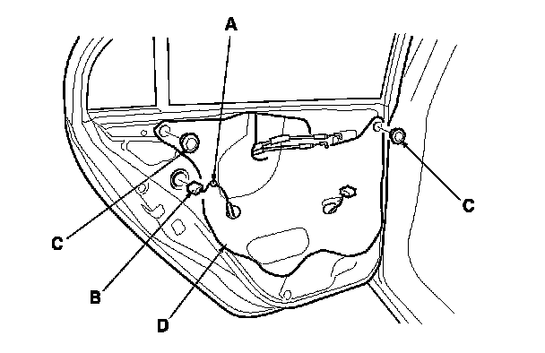
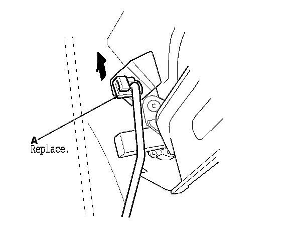
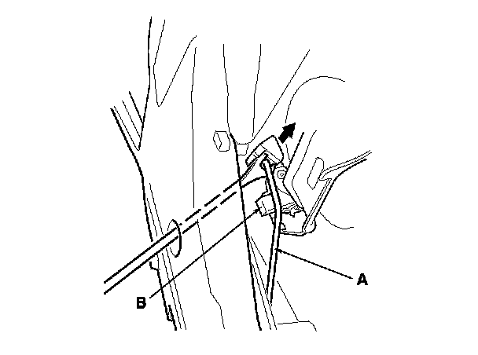
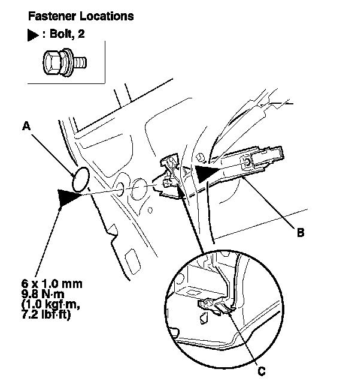
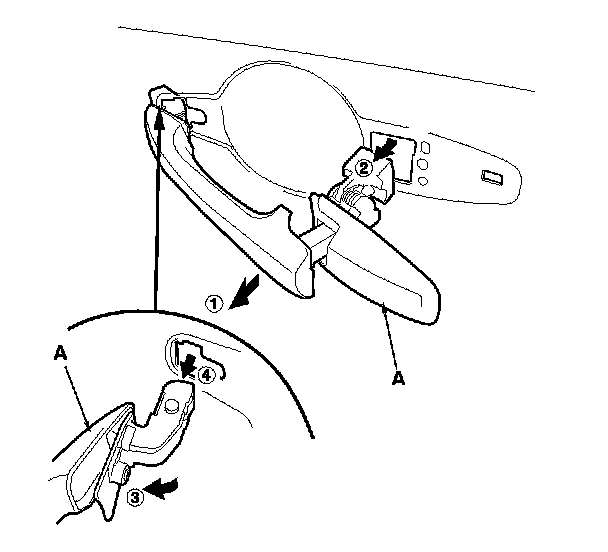
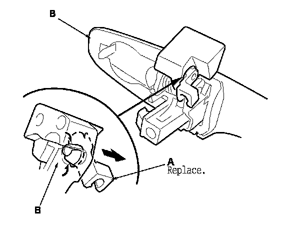

Rear Door Exterior Handle: Service and Repair
Rear Door Outer Handle Replacement
4-door
NOTE: Put on gloves to protect your hands.
1. Raise the glass fully.
2. Remove the door panel. Service and Repair
3. Detach the harness clip (A), and disconnect the power door lock actuator connector (B).
4. Remove the rear portion of the plug caps (C), then remove the plastic cover (D), as needed.
5. Remove the latch mounting screws, then lower the latch.

6. Detach the rod fastener (A).

7. Disconnect the outer handle rod (A) from the outer handle (B) with a clip remover.

8. Remove the maintenance seal (A). Remove the bolts securing the outer handle protector (B), then remove the protector by releasing the hook (C).

9. While pulling the outer handle (A), remove the handle from the holes in the door panel. Take care not to scratch the door.

10. Remove the rod fastener (A) from the outer handle (B), then replace it with a new one.
11. Install the handle in the reverse order of removal, and note these items:
- Make sure the door locks and opens properly.
- When reinstalling the door panel, make sure the plastic cover is installed properly and sealed around its outside perimeter to seal out water.
- Check for water leaks. Adjustments
